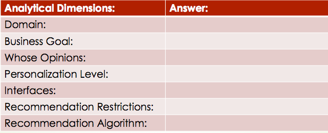
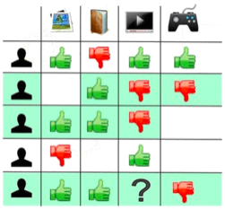
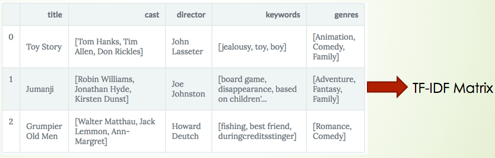

Recommendation engine or recommendation systems are among the most popular applications of data science today. Almost every major tech company has applied them in some forms. Thus, there is no doubt that a good recommendation engine can bring substantial profit to the company. So the goal of this post is to try to talk about my understanding of constructing a good recommendation engine.
Contents
First, let’s look at the structure of this post.
- Overview
- Business Analysis
- 2.1 Analytical Framework
- 2.2 Deep Dive into Amazon.com
- 2.3 Conclusions
- Data Science Analysis
- 3.1 Introduction
- 3.2 Model Construction
- 3.3 Conclusions
- Combination
I divide my presentation into four parts, first I will give a brief introduction about recommendation engine, and then I will take a general business analysis about recommendation systems in Amazon; Next, I will take a pure data science analysis about recommendation systems; Finally I will combine these two analyses together.
1. Overview
When I met the word "Recommendation Engine", the first question came to my mind was: why we need it?
Briefly speaking, it is all because of money. For example, Amazon and Netflix recommend items and movies to attract the user to buy directly; YouTube and Facebook are not selling anything but with your stay in its website, they can show more ads and also increase the income.
So, now we know why we need a recommendation system, actually it is said that 30% of Amazon’s income was due to its recommendation. Then how the recommendations look like? Can we analyze them from a business perspective? Then the next step, I will try to deep dive into Amazon.com to have a general business analysis of these recommendation engines.
2. Business Analysis
2.1 Analytical Framework
To make my analysis more structured, I referred to one of the recommendation analysis framework raised by Joseph from University of Minnesota and then revised a little bit.

By following this framework, we could make it very clear about each of the recommendation engine. Let’s then use this analytical framework while we deep dive into Amazon.com.
2.2 Deep Dive into Amazon.com
Here are the things Amazon recommended to me.
At the top is an advertisement of Amazon Echo and other staffs. As far as I know, these ads are not highly personalized, and they will choose to show some recent popular items.
Next, we notice that Amazon put its deals recommendation at the most obvious location. That makes sense because personalized and cheap items are very easy to catch customer’s eyes, so it has a more probability to be clicked on.
For me, the bike and some magazines do attract me a lot since I like cycling and reading and once bought a bicycle lock from Amazon. So it seems like these recommendations aim to recommend me similar items I bought before and now have discounts.
2.3 Conclusion
Based on my tour on Amazon pages, I found that:
- For different recommendation purposes, we may need to generate different recommendation results
- Different recommendations may need to be put in different web locations.
So, it is very important to define our recommendation’s business goal before creating any models.
3. Data Science Analysis
Now let’s look at the recommendation system in a data science perspective.
3.1 Introduction
Typically, we have two types of recommendation engines.
Collaborate Filtering
This type of model tries to find the similarities between each user and predict user’s behavior based on other similar users’ behavior. So for example, if we want to predict the fifth user’s preference for watching TV, we could see other two users preferences since they are very similar to the fifth user.

Content-based Filtering
Another type of recommendation engine is called content-based filtering. It tries to use keywords or other description to construct a profile for user and item. And then recommend similar one.
For example, we could use the overview description for each item to construct TF-IDF matrix and find a similar item with it or use some keywords to generalize these products such as category, material, function and so on.

Collection of Data
Except for the model, the data from recommendation engines are different from our normal data set. It can be either explicit or implicit.
Explicit Data: Data inputted by users such as ratings and comments
Implicit Data: Order history/return history, Cart events, Click thru and search log.
For my later model, I suppose we have enough explicit data which is the rating information from each user.
Here is how the ideal data frame looks like: each entry represents the rating one user gave to the item.
| ID | user1 | user2 | user3 |
|---|---|---|---|
| item1 | 1 | 5 | 3 |
| item2 | 2 | 2 | |
| item3 | 2 | 5 |
Here Each entry $r(i,u)$ represents the rating of this $u$ user for the $i$ item.
3.2 Model Construction
Memory-based Model
Now it is time to construct a real recommendation engine. The first method I used is the traditional CF memory-based model, what it does is that:
- We first find a similarity measure between each user. There are several ways we can do, here I choose to use cosine similarity. This similarity measure is very intuitive since if we deem two users' rating as two vectors, Cosine is just the measure of the intersection angle between these two vectors. The smaller the angle, the more similar of the users.
- Then we make predictions based our average rating plus other similar users rating.
- Finally, we evaluate our model by calculating the mean absolute differences between our rating prediction and the real rating.
Here is the summary information for this model:
- Advantages:
- Intuitive: Very easy to understand
- Simple: Easy to operate
- Drawbacks:
- Scalability: Computation cost grows as data getting larger
- Sparsity: Commonly rated items for two users are quite few
Model-based Model
So here comes to a more advanced model that perfectly solves the above two problems and it actually won the Netflix Recommendation Competition in 2009. This model is called latent factor model. Essentially, we want to turn the recommendation problem into a machine learning optimization problem.
But, how we transform it? Basically, we view our problem in a different way. Suppose we use squared error as our metric, now our problem is viewed as how good we are in predicting the rating for items, so our goal now is to try to minimize our loss instead of finding the most similar user.
Let us see the image illustration to understand how it works. Where Q matrix represents the item information per row and the P matrix represents the user information per column. K is the factor parameter we will choose; The latent factor K is a broad idea which describes a property or concept that a user or an item has. For instance, if the items are music, so the latent factor can refer to the genre that music belongs to. In a word, this method tries to map our original data matrix into two low dimensional matrices by only using the existing data. So now we can see how this model perfectly solves two previous problems.
But how this model solves our previous problems?
- For sparsity, this model only uses the data that we already have, do not need to fill the NA or suppose them to be zero.
- For scalability, this model maps our user-item matrix to two low dimensional ones, and the dimension is controlled by the number of factors you choose.
Finally, to achieve this mapping, we always use SVD technique. Briefly sparking, SVD is a matrix decomposition techniques that decompose our original matrix into some low dimensional matrices and also keep the minimum reconstruction error, which is perfectly matching our goal, right?
Then let’s see how we construct this model:
- First we need to solve this optimization equation, basically, it means we try to find the matrix p and q that minimizing the square error by using our existing data (the yellow region). This optimization problem can be achieved by using gradient descent.
- We need to choose the best factor number for performing cross-validation.
- Next, we can make a prediction by multiple p and q matrix.
- Finally, we also use mean absolute error to check the goodness of our prediction.
Here is the summary information for this model:
- Advantages:
- Ignore sparsity: No need to fill value into the empty entry
- Efficient: Commutation cost is not that heavy
- Drawbacks:
- Not Intuitive: Hard to explain the reason that we recommend the item
3.3 Conclusion
From this part, I performed two collaborate filtering models. Actually, there are so many other models we can use, such as content-based model or clustering model.
But I find that each of them has their own drawback, for collaborate filtering model, it suffers cold start, which means we are not able to make a good recommendation if we have little rating information for this user. For content-based model, it is hard to recommend different categories items; and clustering has difficulties with sparsity.
So to make a good prediction, it is more reasonable to have a hybrid model: what I think is that, at the beginning if we have little data, we could use content-based model first, and then, using clustering algorithm such as EM algorithm to segment our user, and finally use the target cluster’s user data to perform latent factor model.
4. Combination
In the end, let me combine my two parts analysis together.
I think at the beginning; you may wonder why I have a such a structure that starts with business analysis and then technology-based analysis. The reason is that I think a good data science application should always be the combination of business plus data science analysis.
Based on my previous analysis, a good recommendation should always start with a clear business goal: where to put the recommendation, what type of items to recommend, personalized or not. After that, we are able to collect the targeted data to achieve the goal. Finally, always keep in mind each model’s drawback, a hybrid model may be a better choice.
Following this pipeline, I also summarized what technology stack I will use in each step. We may first use some BI tools to perform our business analysis such as A/B test, and the data normally will be stored in the cloud database, so I will use Spark SQL to connect to a cloud SQL instance and then load data into Spark DataFrame or RDD format. Spark Streaming is used to update our dataset in real time. Finally, we can either use Spark MLlib recommendation module or use Python Surprise library to construct our recommendation model. At the same time, We can also use AWS or google cloud to help us quickly get results.
Hope this post could give you my understanding of constructing a good recommendation engine!
Reference: https://hackernoon.com/introduction-to-recommender-system-part-1-collaborative-filtering-singular-value-decomposition-44c9659c5e75 https://github.com/rounakbanik/movies/blob/master/movies_recommender.ipynb https://www.youtube.com/watch?v=E8aMcwmqsTg&list=PLLssT5z_DsK9JDLcT8T62VtzwyW9LNepV&index=55 https://www.coursera.org/specializations/recommender-systems